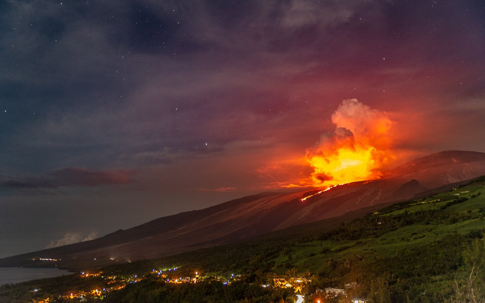

Photo © Tony Defaud Photographie
Cela faisait très longtemps que je n’avais pas parlé des éruptions du piton de la fournaise. Cette année je m’y remet à la faveur d’une nouvelle éruption qui pourrait être qualifiée de routinière. Pourquoi je fais ça ? Pour partager avec vous les jolies photos de Tony Defaud.

Photo © Tony Defaud Photographie
En 1997 quand j’ai commencé ce blog, il n’y avait pas beaucoup de sites parlant de la Réunion. Encore moins de site parlant de la Réunion et partageant en détail tout ce qui pouvait intéresser sur le piton de la fournaise. Aujourd’hui ce n’est plus le cas. Avec les réseaux sociaux, «volcan l’a pété» surgit sur les timelines alors que la lave n’a pas encore coulé sur un mètre. Ceci laisse le temps à tout le monde de couvrir l’événement. Par « tout le monde » j’entends clicanoo qui raconte ce qu’il se passe avec les communiqués de la préfecture, Imaz Press Réunion qui fait toujours des reportages photos et les autres blogeurs comme Dijoux.net qui couvrent l’événement mieux que moi.
Ce faisant j’ai couvert les éruptions de 1998, qualifié d’éruption du siècle par sa durée (196 jours) après un silence de 6 ans , 2001, la deuxième éruption, avec la formation d’un cinquième cratère en deux ans, 2002, l'éruption qui a offert un hectare de plus à la Réunion grâce à une coulée de lave se jetant dans la mer, 2003, 2004, une autre éruption avec coulée impressionnante se jetant dans l’océan. et 2006, l'éruption qui a duré d’août à janvier de l’année suivante. Ensuite je me suis reposé pendant dix ans. Mais pas le volcan. Certes, il y a eu des éruptions puisque le piton de la Fournaise est l‘un des volcans les plus actifs du monde mais j’étais sûrement occupé à d’autres choses et le temps a passé alors que reunionweb se metait à jour de plus en plus irrégulièrement…
Le site fournaise.info présenté ici en 2001 et plusieurs fois cité comme la référence est toujours l’endroit pour suivre toutes les éruptions. Le vide ici est donc comblé. Ce site liste les sept éruptions de 2007 à 2010 dont une seule est vraiment notable, en avril 2007, avec l'effondrement du cratère Dolomieux, le plus gros cratère de l'encolos. Après 2010, il y a eu 3 ans de silence puis l’activité a repris avec au moins une éruption par an, parfois une petite éruption de quelques jours et parfois une éruption spectaculaire avec fontaines de laves de grosses coulées.
La première éruption de l’année 2019 a commencé le 19 février. La lave est abondante avec la formation d’un cône mais elle s’écoule lentement. En ce début de mois de mars elle est encore à 4 kilomètres de la route des laves (la bien nommée) et il y a aussi une autre coulée un peu plus haut. Comme le nouveau cratère est à l’ouest du Dolomieux, il n’est pas possible d’observer l’éruption depuis le pas de Belcombe en haut mais il est possible de voir s’étirer la coulée depuis le bas Par exemple du coté de Bois-Blanc où Tony Defaud a placé son appareil un des premiers soirs au début de l’éruption. Ce sont ses photos qui m’ont donné envie de parler à nouveau du piton de la Fournaise. La star de la Réunion se donne en spectacle et Tony Defaud la sublime. Je ne peux hélas vous orienter vers sont site qui est actuellement en rade pour problèmes techniques. Qu’à cela ne tienne, ces photos choisies sont ci-dess(o)us pour la postérité et vous pouvez retrouver tous le travail de ce photographe sur sa page facebook Tony Defaud Photographie.
Photo © Tony Defaud Photographie